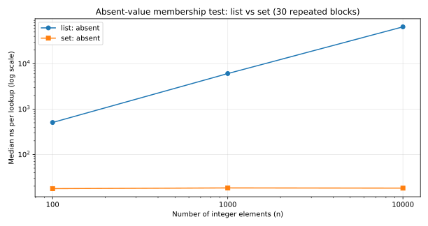

데이터가 많아질수록,
어떤 탐색이 빠를까?
Python list와 set의 원소 탐색 속도를 실제 실행으로 검증했습니다. 빠르다는 인상 대신 가설·원자료·반례와 재현 가능한 코드까지 공개합니다.
540실제 블록 측정값
30조건별 반복 횟수
93 크기 × 3 조회 조건
반증 가능한 한 문장
동일한 정수 n개(n=100, 1,000, 10,000)를 담았을 때, 존재하지 않는 정수 -1의 조회당 실행 시간 중앙값은 모든 n에서 set이 list보다 짧을 것이다.
조작한 조건
자료구조와 원소 수, 검색 위치(부재·첫 위치·끝 위치)
측정한 값
Python timeit에서 측정한 조회당 나노초(ns), 30회 중앙값
반증 기준
3개 크기 중 하나라도 부재 조회에서 set 중앙값이 같거나 크면 가설 미지지
부재 조회, 실제 측정 중앙값
동일한 n의 list/set에 대해 조회를 반복했습니다. 큰 수치가 느린 쪽입니다.
| 원소 수 | list (ns) | set (ns) | list / set |
|---|---|---|---|
| 100 | 506.80 | 17.65 | 28.7배 |
| 1,000 | 6,066.55 | 18.31 | 331.4배 |
| 10,000 | 64,935.15 | 18.13 | 3,581.2배 |
03 · INTERPRETATION
가설 지지, 하지만 예외도
부재 조회에서는 세 크기 모두 set이 빨랐습니다. 그러나 첫 원소 조회에서는 list와 set이 거의 같았습니다. 원소 수 1,000일 때는 오히려 list 중앙값이 0.004ns만큼 작아, 이 차이로 우열을 주장할 수 없습니다.
단일 Linux 환경과 정수 입력만 측정했으며, 컨테이너를 새로 만드는 비용은 제외했습니다. 이 논문은 모든 상황에서 set이 항상 빠르다고 주장하지 않습니다.
원자료 540행 전부 보존. 파일럿·워밍업만 기록 대상에서 제외.

다른 장비에서 절대 시간이 달라질 수 있습니다.